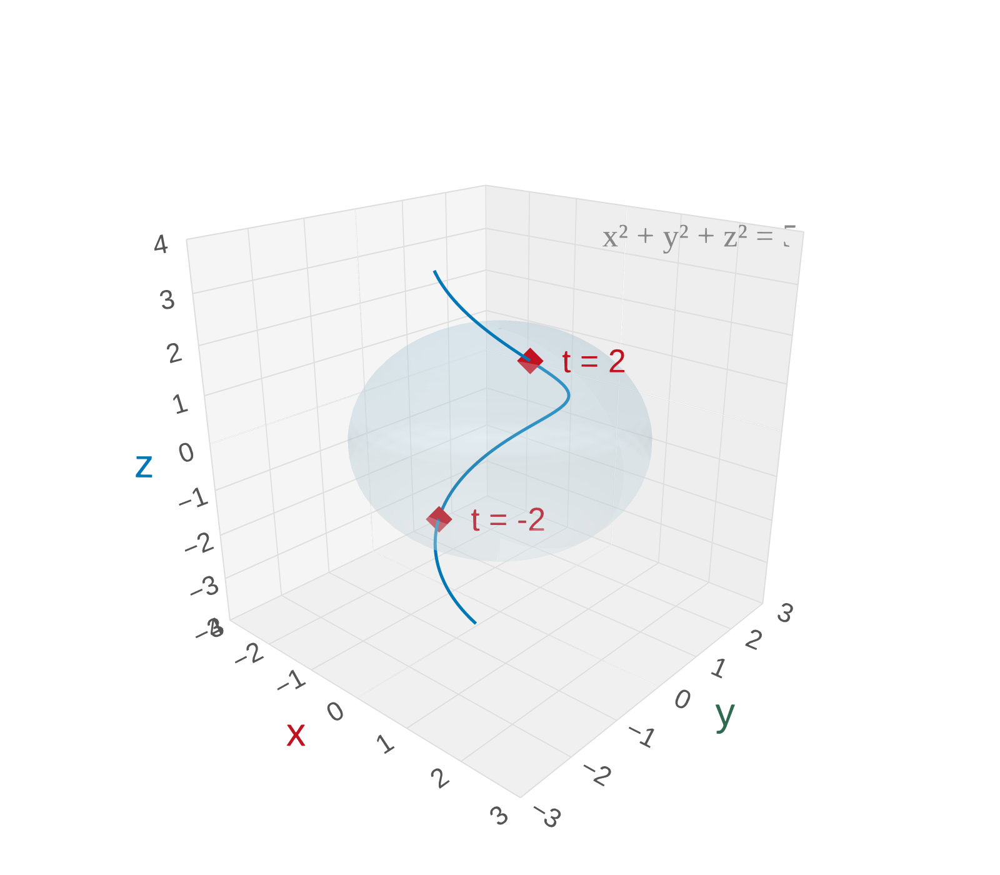

Section 13.1: Vector Functions and Space Curves
Vector Functions
MTH 310
Calculus III
Vector Functions
In Calc I/II, functions take a number in and give a number back: \(f(t) = t^2\).
Now we let the output be a vector instead of a scalar.
Vector Function
A vector function (or vector-valued function) is a function whose input is a scalar \(t\) and whose output is a vector:
\[\vec{r}(t) = \langle f(t),\, g(t),\, h(t) \rangle = f(t)\,\mathbf{i} + g(t)\,\mathbf{j} + h(t)\,\mathbf{k}\]
The functions \(f\), \(g\), \(h\) are called the component functions.
As \(t\) varies, the tip of \(\vec{r}(t)\) traces out a space curve \(C\).
Why Vector Functions?
Think of \(t\) as time. Then \(\vec{r}(t)\) gives the position of a moving object at time \(t\).
- The path it traces is the trajectory (a space curve).
Applications everywhere:
- Roller coasters, planetary orbits, particle physics
- Robot arm paths, drone flight plans
- Blood flow through arteries
Example 1: Sketch \(\vec{r}(t) = \langle t^3,\, t^2 \rangle\)
Strategy for sketching a vector function:
- Make a table of values
- Try to eliminate \(t\) to recognize the Cartesian curve
- Mark the direction of travel (increasing \(t\))
Step 1 — Make a table. Plug in a few values of \(t\):
| \(t\) | \(x = t^3\) | \(y = t^2\) |
|---|---|---|
| \(-2\) | \(-8\) | \(4\) |
| \(-1\) | \(-1\) | \(1\) |
| \(0\) | \(0\) | \(0\) |
| \(1\) | \(1\) | \(1\) |
| \(2\) | \(8\) | \(4\) |
Step 2 — Eliminate the parameter. From \(x = t^3\) we get \(t = x^{1/3}\), so \(y = (x^{1/3})^2 = x^{2/3}\).
Step 3 — Direction of travel. As \(t\) goes from \(-2\) to \(2\), the point moves left-to-right through the origin.

Your Turn: Sketch \(\vec{r}(t) = \langle 2\cos t,\, 2\sin t \rangle\)
Use the same strategy: make a table, eliminate \(t\), identify the curve.
Eliminate \(t\): \(x = 2\cos t\) and \(y = 2\sin t\), so \(x^2 + y^2 = 4\cos^2 t + 4\sin^2 t = 4\).
This is a circle of radius 2, traced counterclockwise (starting at \((2,0)\) when \(t = 0\)).
Notice how the trig components combine via the Pythagorean identity — the same trick we'll use in 3D!
Space Curves in 3D
In 3D, a vector function \(\vec{r}(t) = \langle f(t), g(t), h(t) \rangle\) traces out a space curve.
We can still make tables, but now we plot in \(xyz\)-space.
Common strategy: Look at what the components tell you.
- Do any components involve trig? That hints at circular motion.
- Is one component linear (like \(y = t\))? That means steady motion in one direction.
- Can you combine components to recognize a surface (like \(x^2 + z^2 = 1\))?
Example 2: Sketch \(\vec{r}(t) = \langle \sin \pi t,\, t,\, \cos \pi t \rangle\)
Step 1 — Identify the cylinder. Look at which components involve trig:
\(x^2 + z^2 = \sin^2(\pi t) + \cos^2(\pi t) = 1\)
The curve lives on the cylinder \(x^2 + z^2 = 1\) (radius 1, centered on the \(y\)-axis).
Step 2 — What does \(y\) do? \(y = t\) increases steadily \(\rightarrow\) the curve spirals upward along the \(y\)-axis.
Step 3 — How fast does it wind? The argument \(\pi t\) completes one full cycle when \(\pi t\) goes from \(0\) to \(2\pi\), i.e., when \(t\) goes from \(0\) to \(2\). So one full turn every 2 units along the \(y\)-axis.
| \(t\) | \(x = \sin\pi t\) | \(y = t\) | \(z = \cos\pi t\) |
|---|---|---|---|
| \(0\) | \(0\) | \(0\) | \(1\) |
| \(\tfrac{1}{2}\) | \(1\) | \(\tfrac{1}{2}\) | \(0\) |
| \(1\) | \(0\) | \(1\) | \(-1\) |
| \(\tfrac{3}{2}\) | \(-1\) | \(\tfrac{3}{2}\) | \(0\) |
| \(2\) | \(0\) | \(2\) | \(1\) |

Where Does a Curve Meet a Surface?
A common question: where does a space curve intersect a surface?
The strategy is straightforward:
- Substitute the components \(x = f(t)\), \(y = g(t)\), \(z = h(t)\) into the surface equation.
- Solve the resulting equation for \(t\).
- Plug back into \(\vec{r}(t)\) to get the point(s).
Example 3: Where does \(\vec{r}(t) = \langle \sin t,\, \cos t,\, t \rangle\) meet \(x^2 + y^2 + z^2 = 5\)?
Step 1 — Substitute the components into the sphere equation:
\(\sin^2 t + \cos^2 t + t^2 = 5\)
Step 2 — Simplify. The Pythagorean identity \(\sin^2 t + \cos^2 t = 1\) collapses two terms:
\(1 + t^2 = 5 \quad\Rightarrow\quad t^2 = 4 \quad\Rightarrow\quad t = \pm 2\)
Step 3 — Find the points. Plug \(t = 2\) and \(t = -2\) back into \(\vec{r}(t)\):
- \(\vec{r}(2) = \langle \sin 2,\, \cos 2,\, 2 \rangle \approx \langle 0.909,\, {-0.416},\, 2 \rangle\)
- \(\vec{r}(-2) = \langle \sin(-2),\, \cos(-2),\, -2 \rangle \approx \langle {-0.909},\, {-0.416},\, -2 \rangle\)

spiraling upward through a translucent sphere x² + y² + z² = 5 (radius √5). The helix intersects the sphere at exactly two points: t = 2 (upper) and t = -2 (lower), marked with red diamond markers.">Your Turn: Where does \(\vec{r}(t) = \langle t,\, 2t,\, 3t \rangle\) meet \(x^2 + y^2 + z^2 = 14\)?
Use the same three steps: substitute, solve for \(t\), plug back in.
Substitute the components into \(x^2 + y^2 + z^2 = 14\):
\[t^2 + (2t)^2 + (3t)^2 = 14\]
Simplify: \(t^2 + 4t^2 + 9t^2 = 14 \quad\Rightarrow\quad 14t^2 = 14 \quad\Rightarrow\quad t = \pm 1\)
Points: \(\vec{r}(1) = \langle 1, 2, 3 \rangle\) and \(\vec{r}(-1) = \langle -1, -2, -3 \rangle\)